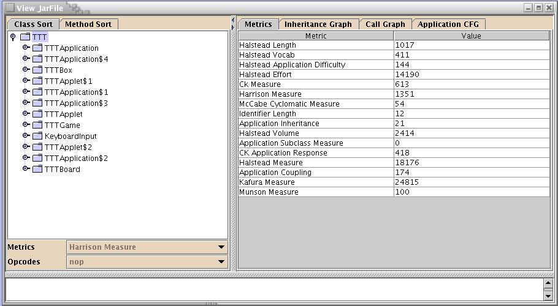
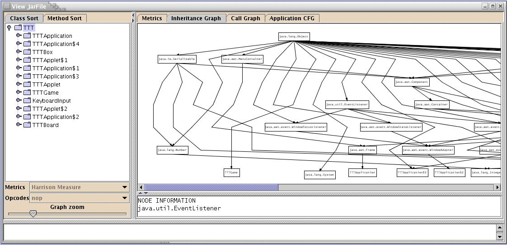
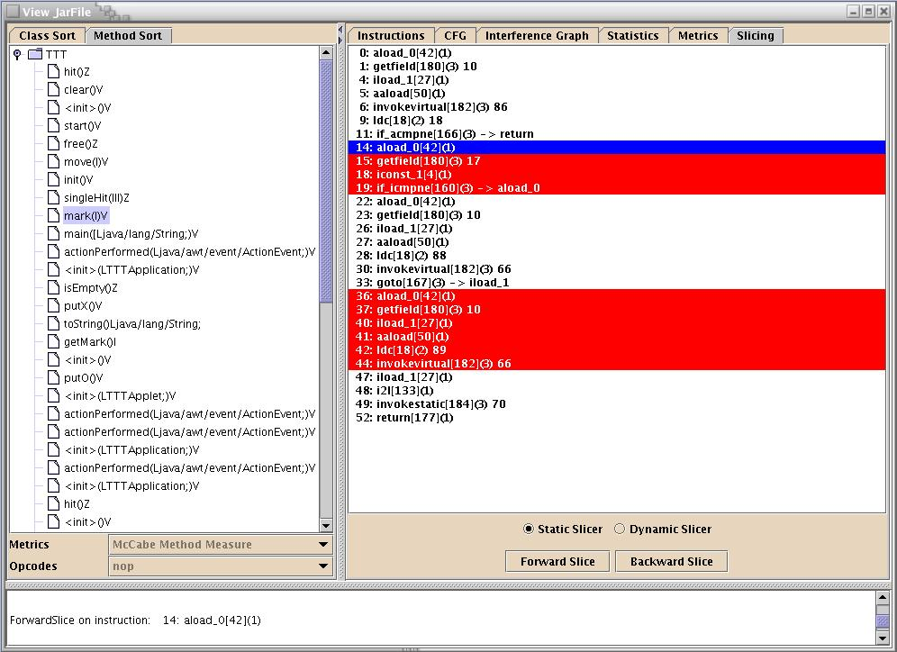

Viewing Jar-Files in SandMark
The view pane displays various information about an application and the classes, methods
and fields it contains. This informatio includes each method's instruction list,
control flow graph, and interference graph, and various statistics and complexity
metric values for each object in an application.
On launch the view pane displays a listing of all of the classes in the
particular application. The classes can then be sorted based on software complexity
metrics, such as the Halstead metric, or by the frequency of occurrence of a
particular opcode in the class.

Once a method has been selected it is possible to view the bytecode
instructions, the method control flow graph, the method interference graph,
statistic values and software complexity metric values.
For both the control flow graph and the interference graph the node may be too
small to display all of the information that it represents. In this case,
clicking on the desired node will display the information in the text box below
the graph. Below are three examples of the information the view pane provides.
Bytecode Instructions

Method Control Flow Graph

Method Interference Graph

Inheritance Graph

Software Metrics in SandMark
The Sandmark statistics module has been designed to obtain various complexity measures of
the target code. Such statistics information can aid the obfuscation procedures in
studying and controlling the level of obfuscation. Also, it might be useful in observing
the watermark code for stealth.
The basic modules deal with the various statistics part of the code, namely
- method/class size statistics:
Various metrics that quantify an individual method/class come under this category such as
average method/class size(in bytes), number of statements, number of public/instance methods
in the class, number of instance variables in a class, etc.
- method/class internal statistics:
Method internal statistics focus on factors such as the number of decision points in the
code of a function, surfaced in IF-THEN-ELSE and other similar constructs. API calls,
Nested Expressions, number of paramters are few measures that are noted to compute
complexity. Similarly, for class internals, factors such as class cohesion and global usage
of variables are taken into account.
- class external statistics:
These set of statistics show how the class relates to other classes, subsystems, users, etc.
Factors such as class coupling, number of reuses of a class and number of classes/methods
thrown away are considered in determining the class external complexity measure.
- method/class inheritance statistics:
Measures such as class hierarchy nesting level, number of abstract classes and extent of
multiple inheritance by classes gives an ideal measure on the class inheritance.
Similarly, count of overridden methods and methods inherited by a subclass expresses the
method inheritance complexity.
Besides these code statistics modules, various software complexity metrics are also implemented.
These complexity metrics cover a wide range of program complexity such as hierarchy levels,
interaction between different modules, data structure complexities, control flow complexties, etc.
Some of the software complexity metrics implemented are :
- McCabe's Cyclomatic metrics
- Halstead's operator/operand metrics
- Chidamber's object-oriented metrics
- Harrison-Magel's nesting metrics
- Henry-Kafura's coupling metrics
- Munson's data structure metrics
Slicing
This pane allows you to open a jar file, select a class and method,
and do a forward or backward slice on any local variable instruction in that method.
